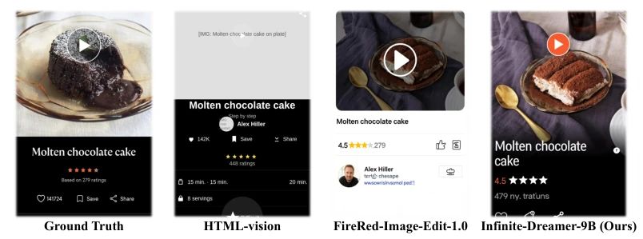
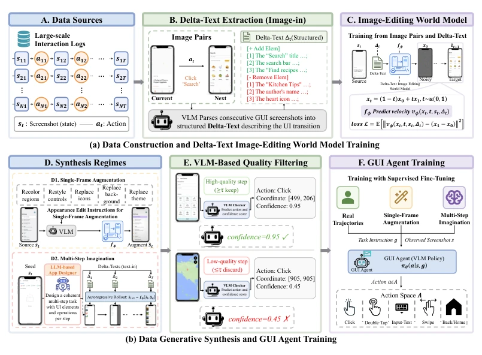
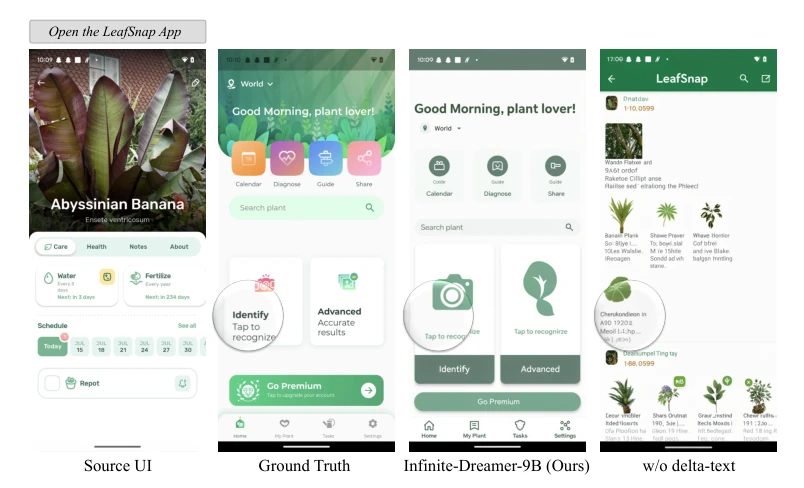
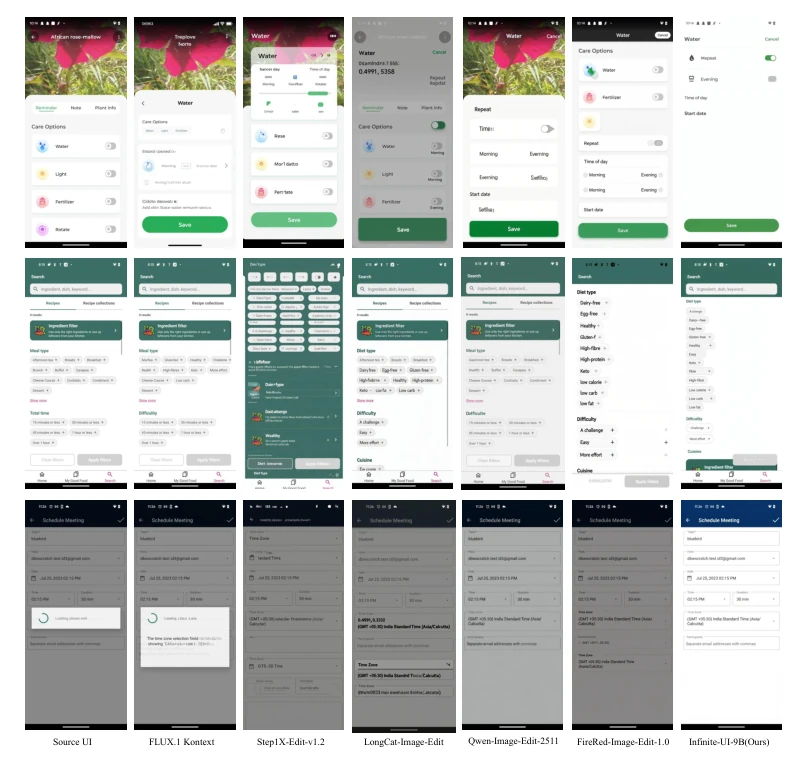
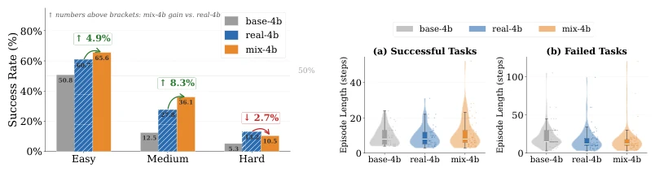
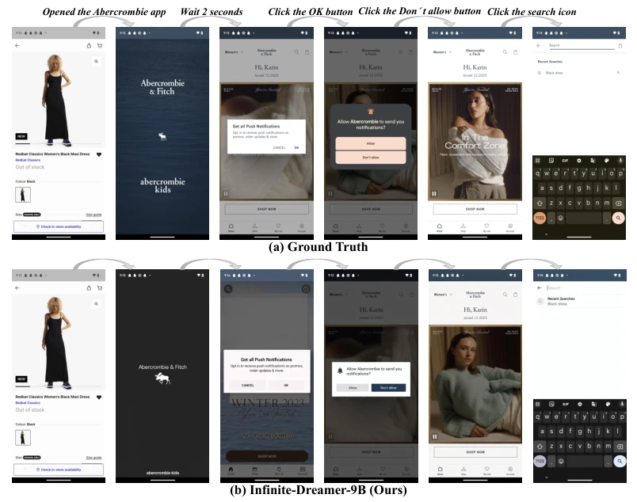
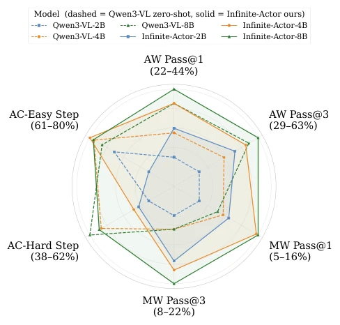
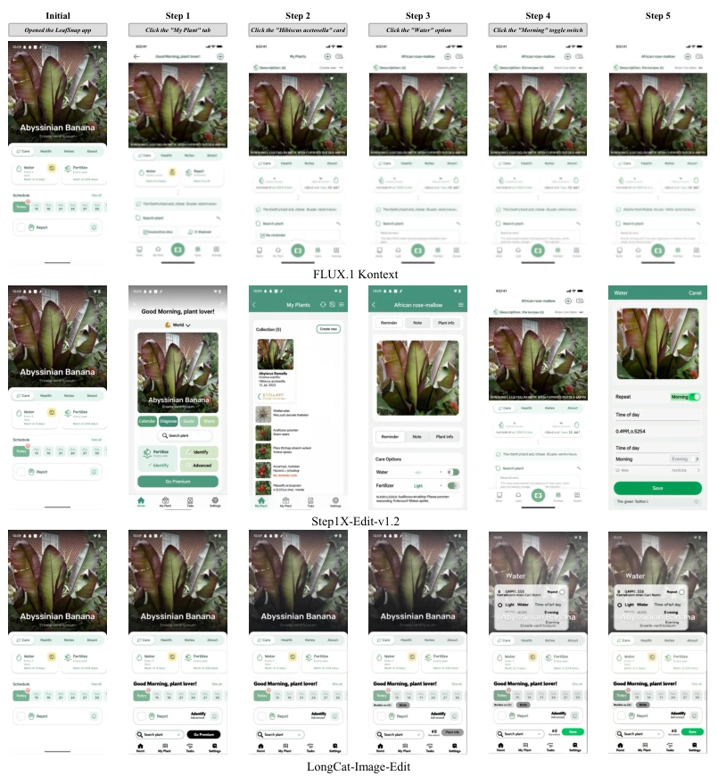
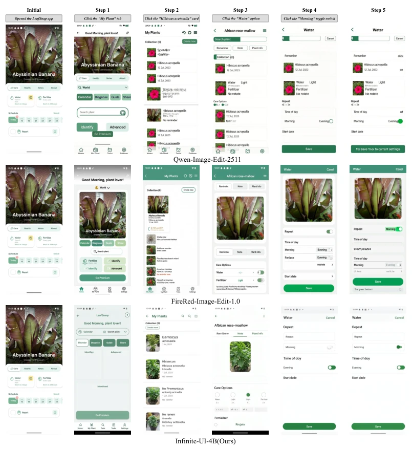
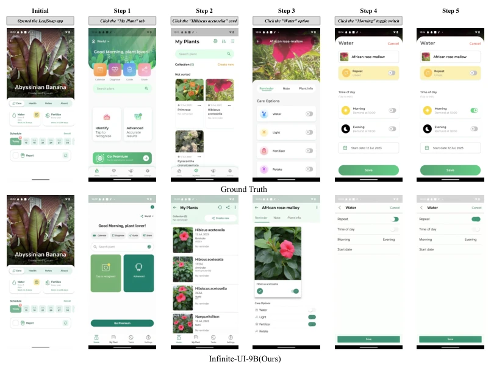

This paper proposes a "Dream Factory" for GUI agent training, the core of which is using image editing models as world models to generate screenshots through "imagination". It avoids the trouble of building complex simulators, directly synthesizing data via pixel-level editing, which is a rather bold approach. However, this "dream" also has side effects; although Pass@1 improved, on offline benchmarks requiring precise coordinates, Infinite-Actor actually underperforms compared to baselines, indicating that while synthetic data enriches generalization, it sacrifices localization accuracy. This is beneficial for the track pursuing "generalization", but for the "precise control" challenging task, this model might still be a bit "presumptuous", after all, long-horizon imagination cumulative error is a fatal flaw. Additionally, the synthetic data distribution is limited by the source data AndroidControl, potentially leading to uneven cross-application generalization. Overall, this is a bold data synthesis attempt, using generative models to fill the gap in real interaction data, but it is still far from a perfect "digital twin".
研究动机Motivation
GUI 代理的核心瓶颈在于高质量视觉 - 动作轨迹数据的匮乏。人工标注成本高昂且受隐私限制，而现有的自动化探索方法（如 OS-Genesis Sun et al. (2025), GUIrilla Garkot et al. (2026)）容易陷入死循环或产生短序列数据。更关键的是，现有的 GUI 世界模型（如 Qwen-AgentWorld, Code2World）多依赖文本描述或 HTML 渲染，丢失了图标、布局等关键像素级视觉细节。这导致模型无法真正理解用户看到的界面。因此，如何在不依赖昂贵模拟器的前提下，高保真地合成像素级 GUI 交互数据，成为提升代理泛化能力的关键。现有方法难以兼顾视觉保真度与数据规模，亟需新的合成范式。
The core bottleneck of GUI agents lies in the scarcity of high-quality visual-action trajectory data. Manual annotation is costly and limited by privacy, while existing automated exploration methods (e.g., OS-Genesis Sun et al. (2025), GUIrilla Garkot et al. (2026)) are prone to falling into dead loops or generating short sequence data. More critically, existing GUI world models (e.g., Qwen-AgentWorld, Code2World) mostly rely on text descriptions or HTML rendering, losing key pixel-level visual details such as icons and layouts. This leads to models being unable to truly understand the interface seen by users. Therefore, how to synthesize pixel-level GUI interaction data with high fidelity without relying on expensive simulators becomes key to improving agent generalization capabilities. Existing methods struggle to balance visual fidelity and data scale, urgently requiring a new synthesis paradigm.

Figure 1: Motivation. Post-action screenshots predicted by different world models: (1) ground truth; (2) HTML-vision rendering, lacking visual detail; (3) the pretrained FireRed-Image-Edit-1.0, failing to capture GUI-specific transitions; and (4) our Infinite-Dreamer-9B, producing high-fidelity, pixel-level screenshots faithful to the ground truth.
Proposes the Infinite-Dreamer framework. First, utilize VLM to extract structured Delta-Text from real UI trajectories, describing interface changes before and after operations (e.g., adding/removing elements). Second, fine-tune the FLUX.2-Klein image editing backbone network, transforming it into a pixel-level GUI world model to predict the next frame conditioned on the current screenshot and Delta-Text. The synthesis phase is divided into single-frame enhancement (changing style/layout) and multi-step imagination (LLM planning tasks, model autoregressively generating trajectories). Finally, remove low-confidence steps through a VLM quality filter to train the Infinite-Actor agent. The innovation lies in transferring the fine-grained control capability of image editing to GUI state transition prediction, achieving data generation without simulators. Delta-Text serves as an intermediate semantic layer, effectively connecting natural language instructions with pixel-level image editing, ensuring logical consistency of state transitions. Specifically, during training, a velocity prediction objective function is adopted; during inference, multi-step trajectories are generated via autoregressive methods, combined with a VLM scoring mechanism to filter out steps with severe visual distortion, thereby ensuring the quality of downstream training data.

Figure 2: Overview of our proposed Infinite-Dreamer: (a) Data Construction and Delta-Text Image-Editing World Model Training. We extract structured delta-texts from real UI trajectories and fine-tune an instruction-guided image-editing model as a GUI world model; (b) Data Generative Synthesis and GUI Agent Training. The trained world model enables two synthesis regimes, namely single-frame augmentation and multi-step imagination, whose outputs are filtered by a VLM-based quality checker and used to train the GUI agent.

Figure 6: Qualitative effect of delta-text conditioning. Given the source UI (leftmost) and the delta- text action “Open LeafSnap App”, Infinite-Dreamer-9B (third) closely matches the ground-truth transition (second), whereas the variant without delta-text (rightmost, which only receives the trigger action/operation without any fine-grained descriptions of added or removed elements) collapses into an unrelated screenshot that diverges substantially from the intended target UI.

Figure 7: Qualitative comparison of single-step UI editing. Three examples (rows) show the source UI and outputs from FLUX.1 Kontext, Step1X-Edit-v1.2, LongCat-Image-Edit, Qwen-Image-Edit-2511, FireRed-Image-Edit-1.0, and Infinite-Dreamer-9B (rightmost). Infinite-Dreamer-9B most faithfully executes the requested edits while preserving layout and unmodified regions.
Fine-tune the world model on AndroidControl, and evaluate Infinite-Actor on AndroidWorld, MobileWorld, and AndroidControl-Curated. Baselines include Qwen3-VL, GUI-Owl, and general VLMs. Results show that Infinite-Actor-8B improved Pass@1 by 4.45 points on AndroidWorld, and nearly doubled on MobileWorld. Ablation experiments indicate that Delta-Text conditioning is indispensable, and mixing real and synthetic data yields the best results. However, on Hard tasks, due to long-horizon imagination cumulative error, performance is slightly lower than training with pure real data, and coordinate localization accuracy (Box Acc) decreases. This indicates that synthetic data still has limitations in long-horizon planning, but performs excellently in short-horizon task generalization. Additionally, trajectory length analysis shows that mixed training models can maintain longer successful task steps, proving that synthetic data effectively expands state coverage.

Figure 3: AndroidWorld analyses for base-4b, real-4b, and mix-4b.

Figure 4: Qualitative synthesis comparison. (a) Ground Truth trajectory (top) versus (b) Infinite- Dreamer-9B (Ours) (bottom) over a 6-step GUI interaction sequence (from opening “Abercrombie” to clicking the search icon). Our model faithfully reproduces the real UI state transitions, maintaining layout accuracy, text fidelity, and visual coherence across all steps.

Figure 5: Performance comparison between zero-shot Qwen3-VL and Infinite-Actor agents across model scales (2B/4B/8B) on six evaluation metrics from Table 1: AW Pass@1 (AndroidWorld Pass@1), AW Pass@3, MW Pass@1 (MobileWorld Pass@1), MW Pass@3, AC-Easy Step SR (AC-Curated-Easy Step SR), and AC-Hard Step SR (AC-Curated-Hard Step SR). Infinite-Actor models consistently outperform their zero-shot counterparts on task-level benchmarks.

Figure 8: Qualitative comparison of multi-step rollout. (a) Part I shows outputs from FLUX.1 Kontext, Step1X-Edit-v1.2, and LongCat-Image-Edit for the five-step LeafSnap watering task; each column is a step. These baselines drift away from the intended UI state.
其他图片Other Figures

Figure 8: (b) Part II shows outputs from Qwen-Image-Edit-2511, FireRed-Image-Edit-1.0, and Infinite-Dreamer-4B (Ours) for the same rollout. Infinite-Dreamer-4B preserves visual coherence while the baselines introduce artifacts and layout drift.

Figure 8: (c) Part III compares the ground-truth trajectory with Infinite-Dreamer-9B (Ours). Infinite- Dreamer-9B closely follows the ground-truth layout and text across all five steps.